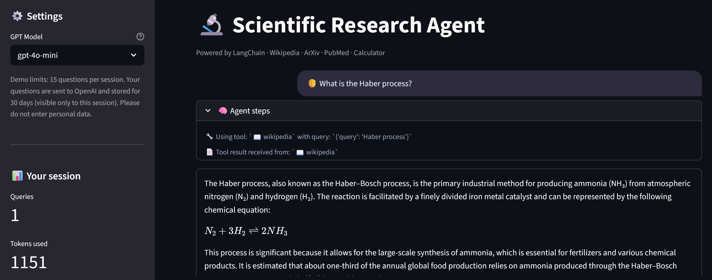

🤖 Scientific Research Agent
A tool-using LLM agent (LangChain and LangGraph) that answers scientific questions by choosing between Wikipedia, ArXiv, PubMed and a safe calculator, hardened for a public demo and tested without an API key.
GitHub Repository · Spec and threat model · Live demo (Streamlit) · Evaluation code and raw results

Why this project
An agent that can call tools is easy to demo and easy to get wrong in public: the model may pick the wrong tool, a calculator tool may execute arbitrary code, a visitor may run up the token bill, and one visitor may see another's history. This project builds a small research agent with these problems handled and measured: safe calculation, usage limits, per-session data, source links under each answer, and an evaluation harness with a held-out split. Answer quality is only partly measured (tool choice, calculator, safety, sources on a small dev set); the factual quality of free text is not.
Results at a glance
Dev set: 16 of the 32 hand-written cases, gpt-4o-mini, one real run.
| Measure | Result |
|---|---|
| Tool choice | 14/14 (95% CI 0.79–1.00) |
| Calculator correctness | 3/3 |
| Safety behaviour | 2/2 |
| Sources shown | 10/10 |
| Cost | about 1,000 tokens and 5.5 s per question |
The test split has not been run yet, and with 16 cases the intervals are wide. Treat these numbers as a smoke check, not a benchmark.
What the evaluation showed
- The harness separates tuning from judging. Cases are split into
dev(for tuning) andtest(run once per configuration, which the runner enforces), and a test checks that no evaluation question leaks into the prompt or code. Results are published only after a real run. - What a visitor gets next to the answer: links to the pages and papers the tools actually retrieved, and the agent's reasoning steps.
Methodology
User question → LLM chooses a tool → tool runs (Wikipedia / ArXiv / PubMed / Calculator)
→ LLM observes the result → final answer + source links
- Pattern: ReAct loop on LangGraph with gpt-4o-mini (gpt-4o selectable), the last 6 messages as short-term memory, and optional LangFuse tracing when keys are configured.
- Tools: Wikipedia and ArXiv through own clients, PubMed through NCBI E-utilities, and a calculator that parses the expression as an AST and never calls
eval. - Cost and safety limits: question length, per-session and daily token budgets, a recursion limit and escaped HTML.
- Data: queries are logged to SQLite with tokens and tools used, visible only to the session that made them and kept for 30 days; CSV export is protected against formula injection.
- Specification first:
SPEC.mdholds the threat model that the tests below follow.
Testing
95 automated tests run on every push (GitHub Actions, with lint and a dependency audit). The suite needs no API key and no network, so it runs in seconds.
What is verified
- Security: the calculator rejects code injection and resource-exhaustion input (a test proves a malicious expression never touches the file system); HTML in questions and answers is escaped; Markdown images are stripped from model output; CSV export is protected against formula injection.
- Agent logic: the real LangGraph agent is driven by a scripted fake model: tool calls, token counting, source collection, the recursion limit and history truncation.
- Resilience: the Wikipedia, ArXiv and PubMed clients are tested against timeouts, HTTP errors, malformed JSON or XML and XML-bomb input; none of them crashes the agent.
- Cost control and privacy: per-session and daily budgets, per-session data isolation, SQL-injection strings stay inert, schema migration and 30-day retention.
- UI: Streamlit
AppTestchecks rendering, the limits and that one visitor never sees another's history.
Not covered
- Real calls to OpenAI and the search APIs are verified by hand on the live demo, not in CI.
- The factual quality of free-text answers is not measured automatically.
Limitations
- The evaluation is small (32 cases, 16 on the dev split run so far), so the confidence intervals are wide and the
testsplit is still unused. - Free-text answers can contain errors that no metric here catches; the sources are there so that a reader can check them.
- Conversation memory is short (6 messages) and the data store is SQLite, which suits a demo and not a multi-user service.
Tech stack: Python 3.11, LangChain, LangGraph, OpenAI API, LangFuse, Streamlit, SQLite, Plotly, pandas, pytest, ruff, GitHub Actions.
Related: the Carbon Nanotubes RAG System adds retrieval with a measured answer quality (RAGAs), and the CV Job Matcher uses OpenAI embeddings for semantic ranking.